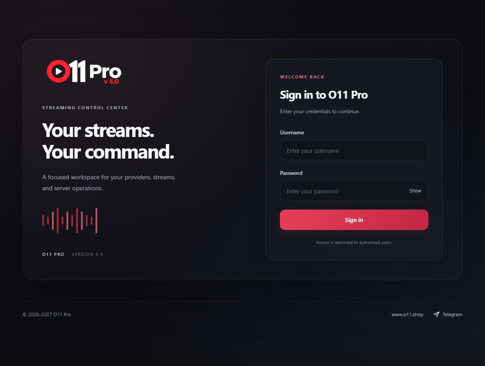
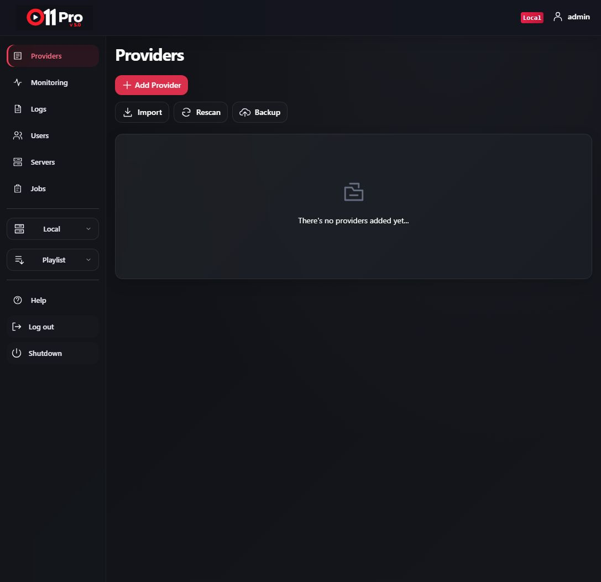
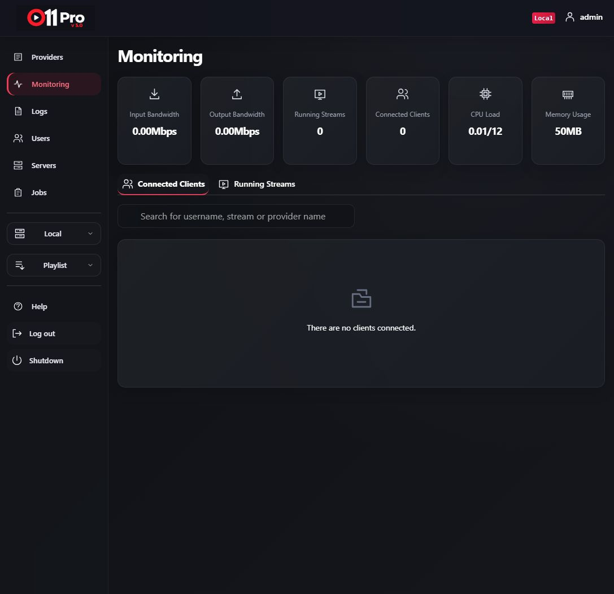
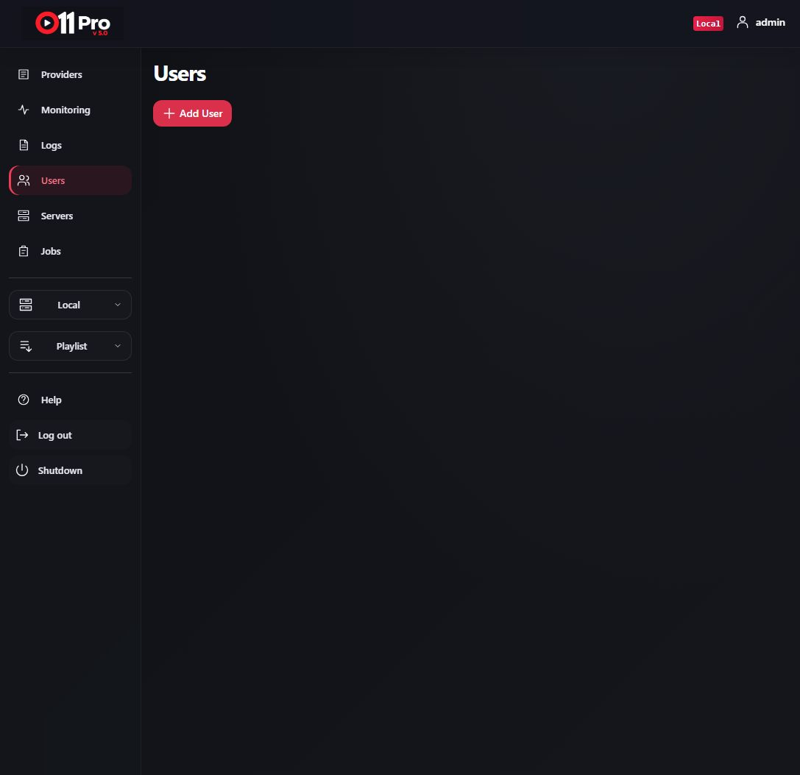
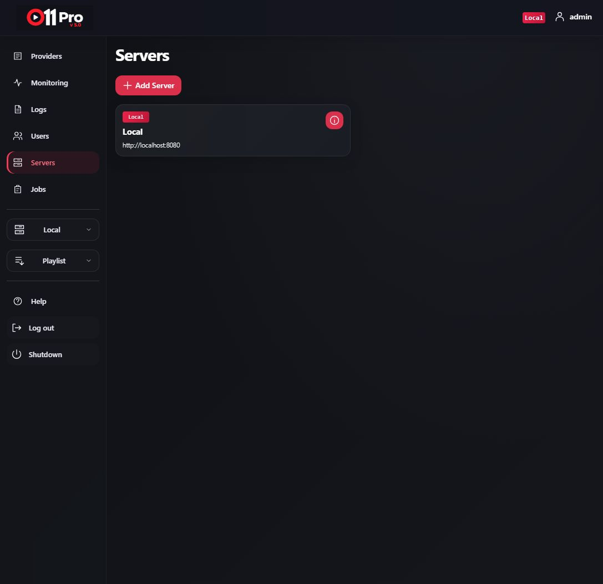
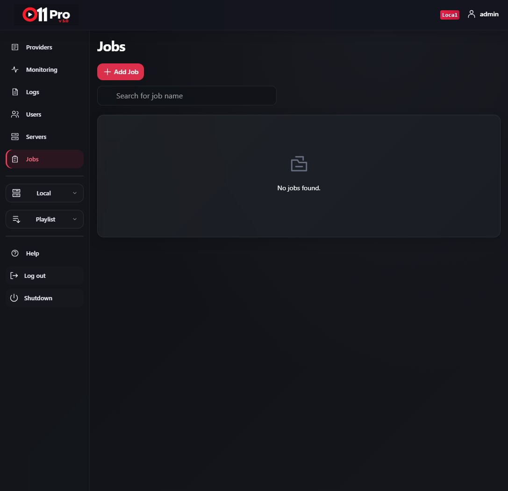

Linux release · Installation & user guide
Your streams.
Your command.
Install, configure, and operate your O11 Pro v5 workspace.
A charcoal interface with refined red accents and crisp scalable icons.
01 / Get started
Install in three steps
1. Prepare your system
Use Linux x86-64 with systemd. On Ubuntu or Debian:
sudo apt update sudo apt install python3 ffmpeg unzip
For WSL, enable systemd before running the installer.
2. Extract and install
unzip O11-Pro-v5.0-Linux-x64.zip -d o11v5 cd o11v5 sudo bash install.sh
Run the installer from the fully extracted package. It verifies SHA-256 checksums before copying files.
3. Create your login credentials
Enter an admin username, a password of at least 12 characters, confirm the password, and choose a port. Password input is hidden. Open http://localhost:8080/login, using your selected port if different.
02 / Your workspace
Manage the service
sudo systemctl status o11v5 sudo systemctl restart o11v5 sudo journalctl -u o11v5 -n 50 --no-pager
| Location | Purpose |
|---|---|
/opt/o11v5/o11pro-v5 | Installed executable |
/var/lib/o11v5 | Application data and configuration |
/etc/o11v5.env | Root-only credentials file |
/var/cache/o11v5 | Runtime backend cache |
Providers manages stream sources. Monitoring displays bandwidth, streams, clients, CPU, and memory. Users, Servers, and Jobs manage their corresponding resources. Back up your data and credentials before making operational changes.
03 / Maintenance
Understand the included tools
Completed-stream cache cleanup
sudo python3 tools/stream_cleanup.py \ --root /var/lib/o11v5/hls/live
Preview first. Add --apply to delete eligible files. Cleanup requires completed HLS playlists containing #EXT-X-ENDLIST, no open files, and a 120-second grace period. It excludes VOD, replay, and recordings.
Resident-memory observation
sudo python3 tools/memory_guard.py
This tool currently targets the development service named o11pro. Adapt that service name to o11v5 before using it with an installed release. Default threshold: 1536 MB sustained for 300 seconds. --restart opts into disruptive restarts.
These utilities are supplied separately. The installer does not automatically schedule them. Memory observation is a mitigation tool, not a repair for an established backend leak. The release binary is compiled and stripped, not encrypted; its backend executes from disk.
04 / Product tour
Six views of O11 Pro v5
Actual screenshots of the local application. Empty states reflect a fresh workspace; no demo providers or stream activity have been fabricated. Click any image to open the full screenshot.












05 / Help
Troubleshooting & support
Installer says port occupied: choose another port or stop the existing instance. Axios network error: check service status and logs, then retry once the service is ready. Login fails: use the credentials created during installation. Do not share the environment file in support messages.